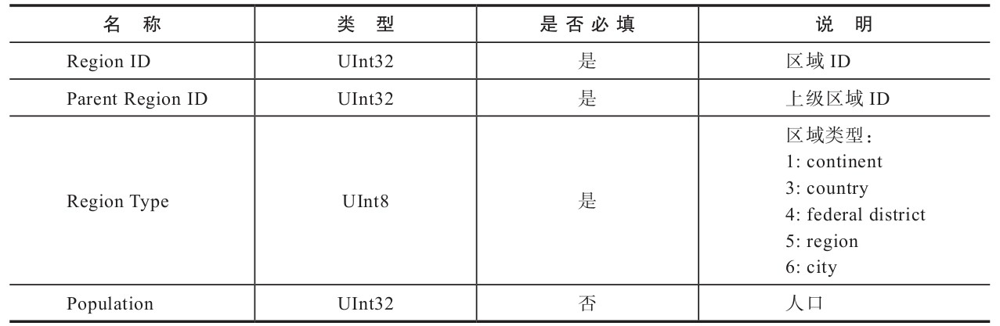
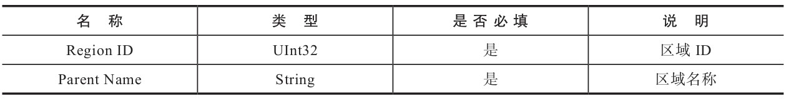

内置字典
摘自：《ClickHouse原理解析与应用实践》 — 朱凯
在豆瓣阅读书店查看：https://read.douban.com/ebook/149635956/?dcs=bookshelf
本作品由华章数媒授权豆瓣阅读中国大陆范围内电子版制作与发行。
© 版权所有，侵权必究。
ClickHouse目前只有一种内置字典——Yandex.Metrica字典。
从名称上可以看出，这是用在ClickHouse自家产品上的字典，而它的设计意图是快速存取geo地理数据。
但较为遗憾的是，由于版权原因Yandex并没有将geo地理数据开放出来。
这意味着ClickHouse目前的内置字典，只是提供了字典的定义机制和取数函数，而没有内置任何现成的数据。
所以内置字典的现状较为尴尬，需要遵照它的字典规范自行导入数据。
内置字典配置说明
内置字典在默认的情况下是禁用状态，需要开启后才能使用。开启它的方式也十分简单，只需将config.xml文件中path_to_regions_hierarchy_file和path_to_regions_names_files两项配置打开。
<path_to_regions_hierarchy_file>
/opt/geo/regions_hierarchy.txt
</path_to_regions_hierarchy_file>
<path_to_regions_names_files>
/opt/geo/
</path_to_regions_names_files>
这两项配置是惰性加载的，只有当字典首次被查询的时候才会触发加载动作。填充Yandex.Metrica字典的geo地理数据由两组模型组成，可以分别理解为地区数据的主表及维度表。这两组模型的数据分别由上述两项配置指定，现在依次介绍它们的具体用法。
-
path_to_regions_hierarchy_file
path_to_regions_hierarchy_file等同于区域数据的主表，由1个regions_hierarchy.txt和多个regions_hierarchy_[name].txt区域层次的数据文件共同组成，缺一不可。其中[name]表示区域标识符，与i18n类似。这些TXT文件内的数据需要使用TabSeparated格式定义，其数据模型的格式如表所示。
-
path_to_regions_names_files
path_to_regions_names_files等同于区域数据的维度表，记录了与区域ID对应的区域名称。维度数据使用6个regions_names_[name].txt文件保存，其中[name]表示区域标识符与regions_hierarchy_[name].txt对应，目前包括ru、en、ua、by、kz和tr。上述这些区域的数据文件必须全部定义，这是因为内置字典在初次加载时，会一次性加载上述6个区域标识的数据文件。如果缺少任何一个文件就会抛出异常并导致初始化失败。这些TXT文件内的数据同样需要使用TabSeparated格式定义，其数据模型的格式如表所示。

使用内置字典
在知晓了内置字典的开启方式和Yandex.Metrica字典的数据模型之后，就可以配置字典的数据并使用它们了。首先，在/opt路径下新建geo目录：
# mkdir /opt/geo
接着，进入本书附带的演示代码，找到数据字典目录。为了便于读者测试，事先已经准备好了一份测试数据，将下列用于测试的数据文件复制到刚才已经建好的/opt/geo目录下：
# pwd
/opt/geo
# ll
total 36
-rw-r--r--. 1 root root 3096 Jul 7 20:38 regions_hierarchy_ru.txt
-rw-r--r--. 1 root root 3096 Jul 7 20:38 regions_hierarchy.txt
-rw-r--r--. 1 root root 3957 Jul 7 19:44 regions_names_ar.txt
-rw-r--r--. 1 root root 3957 Jul 7 19:44 regions_names_by.txt
-rw-r--r--. 1 root root 3957 Jul 7 19:44 regions_names_en.txt
-rw-r--r--. 1 root root 3957 Jul 7 19:44 regions_names_kz.txt
-rw-r--r--. 1 root root 3957 Jul 7 19:44 regions_names_ru.txt
-rw-r--r--. 1 root root 3957 Jul 7 19:44 regions_names_tr.txt
-rw-r--r--. 1 root root 3957 Jul 7 19:44 regions_names_ua.txt
最后，找到config.xml并按照5.1.1节介绍的方法开启内置字典。
至此，内置字典就已经全部设置好了，执行下面的语句就能够访问字典中的数据：
SELECT regionToName(toUInt32(20009))
┌─regionToName(toUInt32(20009))───┐
│ Buenos Aires Province │
└─────────────────────────────────┘
可以看到，对于Yandex.Metrica字典数据的访问，这里用到了regionToName函数。类似这样的函数还有很多，在ClickHouse中它们被称为Yandex.Metrica函数。关于这套函数的更多用法，请参阅官方手册。